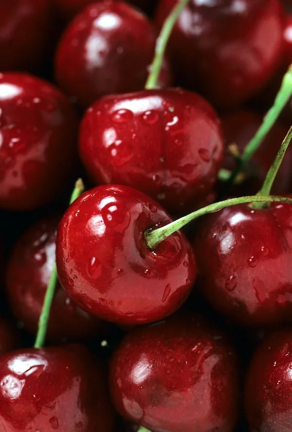

Welcome to fruit juice shop
fruit juice shop is a small, informal restaurant where fruit juice and in most cases, smoothies are made and served to customers. Fruit juice is ideally 100 percent pure juice made from the flesh of fresh fruit or from whole fruit, depending on the type used.
